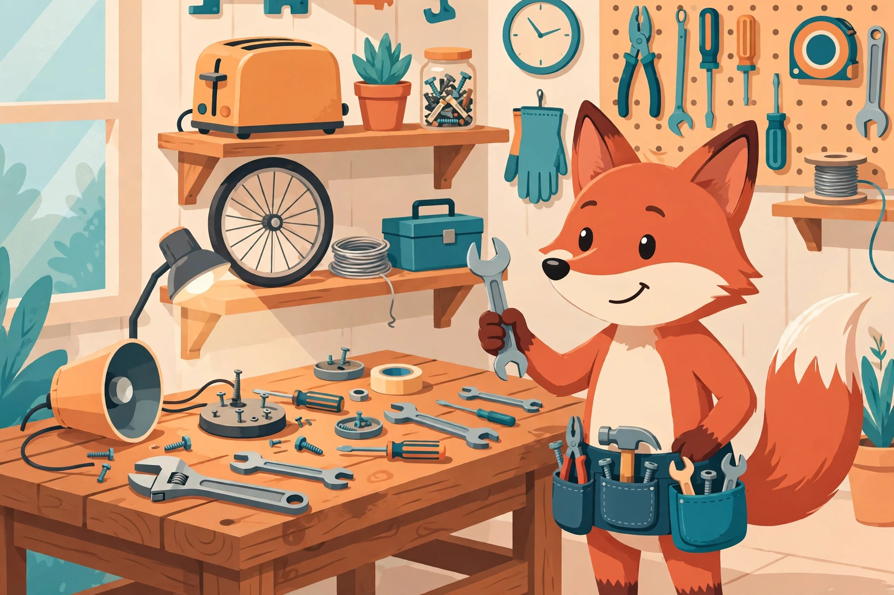

A cozy repair workshop where every broken thing gets a step-by-step plan. Mascot: Felix the Fix-It Fox, pictured below.
Felix the Fix-It Fox keeps the main bench clear: lamp, toaster, bicycle wheel and a jar of screws, each with a plan.
Wrenches, pliers and drivers hang in size order on the pegboard, so the right tool is always in reach.
One hundred and seventy-eight fix records stand on the shelf, one for each problem the workshop has met.
A fix finder (field plus word searches all 178 fix records) and a fix checklist (a record ID returns its steps). The tools run on this page. They do not reach the web, ask for a key, or change any system.
Pick a field and a word, and the workshop finds matching fix records.
Type a fix record ID, such as JAH-FIX-000001, and get its steps.
Designs, printables and demos only. Free, downloadable, usable on this page. Each item is labeled Signature or Fun. Nothing here is for sale.
Printable cards, one per fix field, with the first steps of a real fix record on each.
Making: Print on card, cut, and keep the set by the workbench.
A sturdy apron pattern with pockets for drivers and screws.
Making: Cut from cloth and stitch the pockets on. Fun only — it fixes nothing by itself.
A printable tool-belt layout showing where each tool goes.
Making: Print and use it as a guide for hanging tools in size order.
A notebook for writing down what broke, what fixed it, and what to check next time.
Making: Print the log sheets and bind them. Fun only — the log is yours to fill.
Fun and entertainment only — never fact.
Fun — invented for fun, not a record. Felix once fixed a wobbly table with a folded newspaper and called it 'shim one.' Fun only.
Fun — invented for fun, not a record. A screw Felix dropped is said to roll home every night and wait on the bench by morning. Fun only.
Fun — invented for fun, not a record. A lamp is said to have lit up the moment Felix picked up the driver, just to show off. Fun only.